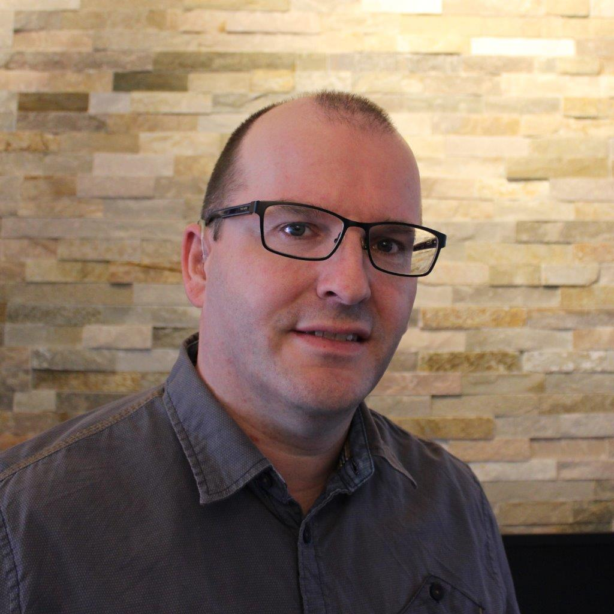

Aangenaam kennis te maken. Mijn naam is Dennis Veldhuizen en ben ik 80% als datamanager en 20% als research analist werkzaam in het academische ziekenhuis Amsterdam UMC.
Na jarenlang met veel plezier hard werken ben ik tot datamanager gepromoveerd naast mijn werk als research analist waar ik oorspronkelijk voor aangenomen ben. Dit heb ik kunnen waarmaken met mijn zelf opgedane kennis aan datamanagement, programmeertalen SQL, T-SQL en VBA, datamodelleringen, ontwerpen, testen, toepassen en updaten van databases, spreadsheets en ETL-processen. Er wordt gebruik gemaakt van Microsoft Access 2021, Microsoft Excel 2021, Microsoft SQL Server Management Studio 18 en Microsoft SQL Server 2019. Als datamanager hanteer ik mijn motto altijd: Niets is onmogelijk als je maar “outside the box” kan denken om tot creatieve ideeën te kunnen komen.
Door mijn fascinatie en nieuwsgierigheid over hoe alles in elkaar zit wil ik mij graag verder gaan verdiepen in ontwerpen, datamanagement en programmeren. Echter zijn er geen doorgroei- en omscholingsmogelijkheden op mijn werk. Ook ben ik de enige die dit werk doet en kan ik met niemand sparren. Dit heeft als gevolg dat ik tegen een muur aanloop en ben ik als een vreemde eend in de bijt geworden. Daarom stel ik mijzelf voor om een carrièreswitch te gaan doen. Ik durf te dromen om ooit te gaan samenwerken met nieuwe collega’s met dezelfde passie.
Mijzelf kan ik omschrijven als een persoon die analytisch, communicatief, creatief, flexibel, gedreven, innovatief, leergierig, nauwgezet, nieuwsgierig, ruimdenkend, samenwerkend, sociaal en zelfstandig aangelegd is. Ook als een teamspeler die graag ervoor open staat om van elkaar te kunnen leren.